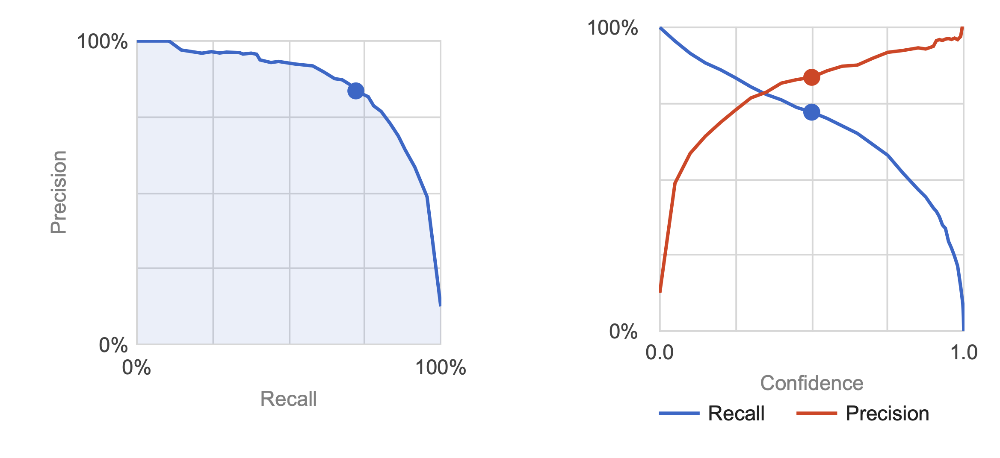
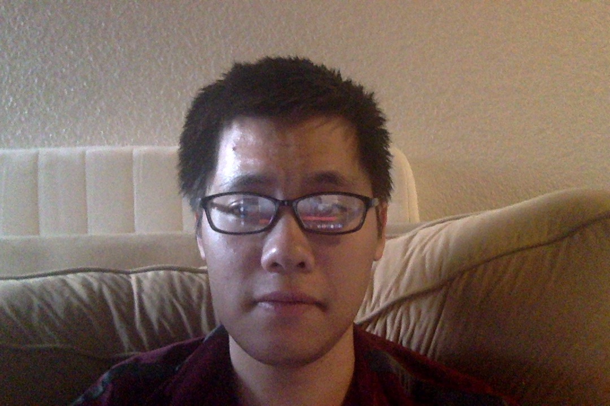

Data Analysis
| Candidate | Agreement score |
|---|
Algorithm Explanation

The classifier (multi-label) is a DNN-optimized machine learning model that we created using the Google AutoML Natural Language Processing and Google Cloud APIs. We fed the model large sets of data- sentences and phrases that each candidate has spoken in public. The data was sourced from interviews, town halls, and twitter as these sources generally contain unscripted views of the politicians, important for mitigating input bias.
Look at the graphs above. The confidence index refers to the level of confidence the model must have to assign a category to a test item. Precision and recall help us understand how well our model is capturing information, and how much it's leaving out. Precision tells us, from all the test examples that were assigned a label, how many actually were supposed to be categorized with that label. Recall tells us, from all the test examples that should have had the label assigned, how many were actually assigned the label.
Team
-
Rohan Sood
Machine Learning/Natural Language Processing
Contact Rohan -
Sam Wight
Wrote parts of the backend and helped out with the front-end.
Contact Sam -

Peter Nguyen
Front end structure and web effect design.
Contact Peter